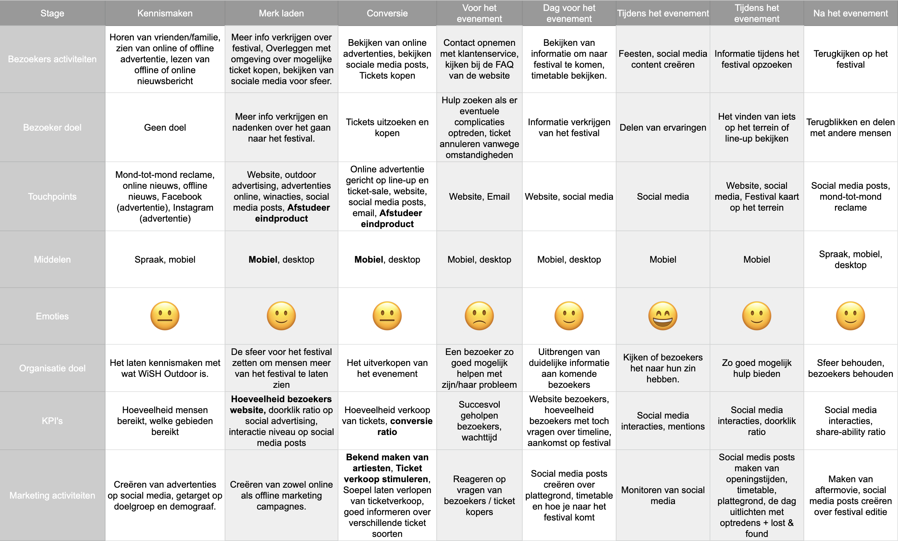

Leeswijzer
Het Bedrijf / festival
Dit afstudeer project wordt uitgevoerd in opdracht van Event Warehouse. Event Warehouse is zoals ze zelf zeggen, de one-stop-shop voor evenementen en festivals. Event Warehouse is uitgerust met onder andere een eigen marketingafdeling, een interne productieafdeling en inhouse horecabedrijf. Event Warehouse bezit hiermee over alle facetten voor het organiseren van grootse evenementen.
Event Warehouse heeft verschillende AAA-festivals op haar naam staan zoals: Paaspop, We Are Electric, Het Zomertheater en sinds kort WiSH Outdoor. Verschillende grote evenementen zijn van Event Warehouse, maar een aantal worden in samenwerking met zusterbedrijf One Of The Guys georganiseerd.
Event Warehouse heeft daarnaast shows mogen produceren voor onder andere Volbeat, Bryan Adams, Faithless, Disclosure en Dropkick Murphys. Tevens bouwen ze shows (letterlijk en figuurlijk) met artiesten zoals Coen en Sander en Charly Lownoise & Mental Theo. Plus ze hebben ijzersterke samenwerkingen met gerenommeerde partijen waaronder SMÈRRIG en Jungle Festival. Op jaarbasis trekken al hun events bij elkaar meer dan 400.000 bezoekers.
Event warehouse is samen met het zusterbedrijf One Of The Guys een samenwerking aangegaan met Bromios, de organisatie achter WiSH Outdoor. WiSH Outdoor is een 3 daags festival met als hoofdgenre Hardstyle. Dit festival trok jaarlijks 35.000 bezoekers per dag waarvan de doelgroep voornamelijk uit Brabant komt. Dit festival is omschreven door een WiSH Outdoor bezoeker als "Een Brabants festival waar alles mogelijk is. De beste keuze om als beginnende festivalganger naartoe te gaan."
Het probleem
Het imago van WiSH Outdoor is de laatste jaren verslechtert. Dit is gekomen door onder anderen onvoorziene weersomstandigheden Deze gebeurtenis heeft een impact gehad op de budgetten van WiSH Outdoor (P1; 00:09:57 - 00:10:21; 00:14:06 - 00:15:15), met het gevolg dat er budgetten werden geschrapt. Waardoor onder andere WiSH Outdoor niet meer de grootste artiesten inhuren. Daarnaast werd er de laatste jaren door de marketingafdeling vooral gefocust op de doelgroep die WiSH Outdoor al heeft als bezoeker en niet op de nieuwe doelgroep waar terrein (en ticketverkopen) viel te winnen. De huidige doelgroep van WiSH Outdoor wordt omschreven als 'Brabants', dit imago is mede tot stand gekomen omdat de marketingafdeling van WiSH Outdoor zich destijds focuste op Brabanders door het gebruik maken van visuals en de tone-of-voice op social media (P5; 00:03:28 - 00:03:56).
De verschillende tegenvallers zorgde ervoor dat er minder bezoekers buiten Brabant kwamen en dat het steeds meer een Brabants feest werd (CM, 2012-2019). Daarnaast had WiSH Outdoor een Tiki-huisstijl aangenomen dat niet aansloot op de grootste doelgroep, de hardstylers (P5; 00:02:15 - 00:03:28). Door de vormgeving die was gekozen zag je dus ook dat er minder hardstyle bezoekers kwamen en dat de muziekgenres gelijker verdeeld zijn over de bezoekers (CM, 2012-2019).
Event Warehouse en One Of The Guys hebben vorig jaar WiSH Outdoor overgenomen. Zij willen het imago van het festival verbeteren en bezoekersaantallen verhogen om zo WiSH Outdoor weer terug te brengen naar de grootsheid dat het in 2016 had bereikt en om daar weer verder op te groeien om uiteindelijk weer één van de grootste festivals van Nederland te worden. Wijzigingen die hieraan bijdragen zijn onder andere een nieuwe identiteit (waaronder een nieuwe branding), een wijziging in het programma aanbod, een nieuwe terreinindeling en een nieuw decor design.
De opdracht
Event Warehouse is op zoek naar een nieuwe innovatieve oplossing waarmee aandacht wordt gegeven aan alle veranderingen binnen WiSH Outdoor. Deze veranderingen aan WiSH Outdoor dienen visueel onder de aandacht te worden gebracht bij de potentiële bezoeker. Door de veranderingen onder de aandacht te brengen, zal dit bijdragen aan de imagoverbetering van WiSH Outdoor. Naast het bijdragen aan de imagoverbetering van WiSH Outdoor is er ook een indirect doel om de ticketverkoop van WiSH Outdoor te stimuleren.
Op basis van de opdracht is er een hoofdvraag opgesteld die aan het
einde van het project beantwoord moet kunnen worden:
Hoe ziet een online eindproduct eruit, waarmee de imagoverbetering
van het nieuwe WiSH Outdoor getoond wordt aan (twijfelende)
bezoekers, waarvan de favoriete muziekstijlen pop en hardstyle zijn
en wat bijdraagt aan het nieuwe imago en indirect de ticketverkoop
stimuleert?
Aanpak
Om tijdens mijn stage naar het antwoord van de hoofdvraag toe te werken wordt er gebruik gemaakt van deelonderwerpen met daarbij behorende vragen.
Imago
Wat voor imago heeft WiSH Outdoor afgelopen jaren gekregen?
Welke uitingen werden gebruikt om het vorige imago over te brengen?
Wat is het gewenste imago van dit jaar? Waarom is dit imago
veranderd?
Welke middelen worden gebruikt om het imago van dit jaar over te
brengen?
Doelgroep
Hoe zien de huidige doelgroepen eruit?
Hoe zien de gewenste, nieuwe doelgroepen eruit?
Hoe verschillen de verschillende doelgroepen?
Waardoor worden de gewenste, nieuwe doelgroepen getriggerd?
WiSH Outdoor Veranderingen
Op welke gebieden zijn er veranderingen binnen WiSH Outdoor
doorgevoerd?
Welke veranderde aspecten zijn belangrijk om mee te nemen in het
eindproduct?
Concurrentie
In welke markt bevindt WiSH Outdoor zich?
Wie zijn concurrenten van WiSH Outdoor?
Welke concurrenten hebben invloed op WiSH Outdoor?
Eindproduct
Welke technieken kunnen gebruikt worden om het gewenste doel te
bereiken?
Wat zijn eventuele voordelen of nadelen van een web techniek?
Wat zijn risico’s waarmee rekening moet worden gehouden bij het
realiseren van het eindproduct?
Uitvoering & resultaat
Het project is onderverdeeld in 4 verschillende fases: orientatie fase, inspiratie fase, ideation fase en implementatie fase. Per fase zullen er een aantal vragen beantwoord worden om uiteindelijk de hoofdvraag te kunnen beantwoorden.
Orientatie fase
In de orientatie fase heb ik gefocust op het vaststellen van het volledige project zodat het voor elke belanghebbende van het project duidelijk was wat er gaat gebeuren. Hiervoor is een projectdocument opgesteld met daarin de uitleg, het doel, de aanpak, een risico analyse en planning van het project. Daarnaast is er een design challenge opgesteld waarmee het project beschreven kan worden in 1 zin:
"Ontwerp een online WiSH Outdoor experience waarmee festivalgangers over heel Nederland die op zoek zijn naar een groot, veelzijdig festival een duidelijk beeld krijgen van het nieuwe WiSH Outdoor en hierbij bijdraagt aan de imagoverandering van WiSH Outdoor en indirect de ticketverkoop stimuleert."
Inspiratie fase
De inspiratie fase is gebruikt om meer informatie te vergaren over WiSH Outdoor en de veranderingen die worden doorgevoerd. Om het wat overzichtelijker te maken is de inspiratie fase verdeeld over verschillende deelonderwerpen. Alle onderzoeken zijn ook samengevat in het onderzoekdocument.
Imago
Om erachter te komen wat voor imago WiSH Outdoor de afgelopen jaren heeft gekregen en wat voor uitingen het imago toen hebben ondersteund is er een expert interview met de marketing manager gedaan. Daarnaast is er bij een focusgroep, bestaande uit 7 festival bezoekers die behoren tot de doelgroep van het nieuwe WiSH Outdoor, verschillende vragen gesteld om het imago van WiSH Outdoor vast te stellen.
Uit de focusgroep en de expert interview blijkt dat WiSH Outdoor wordt gezien als een boers/dorps festival met voornamelijk mensen uit de omgeving Brabant waarin Brabantse gezelligheid voorop staat (P5; 00:05:20 - 00:08:00). Door het inzetten van de marketing op de grootste groep bezoekers, Brabanders (CM, 2012–2019), op social media waarin Brabantse tone-of-voice werd gebruikt in samenwerking met beelden van grappige gebeurtenissen, werd het Brabantse imago alleen maar verder ondersteund (P5; 00:03:28 - 00:05:20). In de ticketverkoopcijfers zie je in de periode 2017 t/m 2019 daarom ook het aantal tickets buiten Brabant dalen (CM, 2012–2019).
Om antwoord te krijgen op de vraag wat het gewenste imago van de nieuwe WiSH Outdoor moet zijn en welke middelen gebruikt kunnen worden om dit over te brengen is er een expert interview gehouden met de project eigenaar en manager van WiSH Outdoor om erachter te komen wat voor imago en doel zij willen bereiken met het nieuwe WiSH Outdoor. Daarnaast is er met de marketing manager van WiSH Outdoor gekeken naar alle middelen die gebruikt gaan worden om het imago en doel voor het nieuwe WiSH Outdoor over te brengen.
Uit de expert interviews is naar voren gekomen dat WiSH Outdoor weer terug wil keren naar de grootsheid die ze hadden bereikt in 2016. Het imago dat ze willen uitstralen is: "Een landelijk, zomers AAA weekendfestival met live muziek, hardstyle en house, gericht op de provinciale doelgroep (pop, house, urban) en de landelijke doelgroep (hardstyle)." (Event Warehouse, 2021). Om dit te bewerkstelligen zal er gefocust worden op andere doelgroepen, er wordt gebruik gemaakt van een andere tone-of-voice waarin leesteksten in het normaal Nederlands en de titels in het Engels worden geschreven om groots te klinken (P5; 00:10:25 - 00:11:15). Daarnaast is er een nieuwe vormgeving waarin zowel hardstylers als pop liefhebbers aangesproken worden om zo iedereen richting het festival te krijgen (P5; 00:15:32 - 00:16:30). Verder zal er door het gebruik van social media en offline marketing geprobeerd worden om de nieuwe doelgroep aan te spreken op verschillende manieren en momenten die beter weergegeven zijn in de customer journey
Om erachter te komen wat er nog moet gebeuren om het imago van WiSH Outdoor dichter bij het gewenste imago te krijgen is er een GAP-analyse uitgevoerd. Door het gewenste imago, de fysieke identiteit en werkelijke identiteit te vergelijken met het imago van WiSH Outdoor wordt een kloof zichtbaar gemaakt waarin onderscheid gemaakt wordt tussen symboliek, communicate en gedrag. Uit de GAP-analyse blijkt op het gebied van symboliek dat om het gewenste imago te bereiken er gebruik zal worden gemaakt van een nieuwe huisstijl die zal aanspreken op de verschillende doelgroepen, dus zowel op Pop als Hardstyle liefhebbers (P5; 00:15:32 - 00:16:30, P1 & P2 00:22:33 - 00:23:30). Daarnaast zullen beelden van het festival worden afgestemd om minder op Brabantse gezelligheid te focussen, maar meer gaan over het festival gevoel en de artiesten (P5; 00:05:20 - 00:08:00).
Op het gebied van gedrag zal WiSH Outdoor zich vooral moeten laten zien tijdens het daadwerkelijke festival. Dit kunnen ze doen door een programma en terrein neer te zetten dat ze communiceren in de aanloop naar het festival toe.
Op het gebied van communicatie zal ook de tone-of-voice een upgrade krijgen. Waarin titels in het engels zijn en de leesteksten in het Nederlands, zonder Brabantse accenten om zo ook buiten Brabant mensen aan te spreken en het festival wat grootser te laten lijken (P5; 00:10:25 - 00:11:15). Daarnaast zal WiSH Outdoor naar buiten communiceren dat er dingen veranderen, maar heeft op dit moment geen mogelijkheid om de grootsheid en veranderingen van WiSH Outdoor te laten zien voor het daadwerkelijke festival plaats vindt.
Daarnaast heeft een gecreërde focusgroep van de nieuwe doelgroep van WiSH Outdoor aangegeven dat ze geïntereseerd zijn om meer informatie te krijgen van zaken, zoals muntenprijzen, drank- en eettentjes, die ze vaak pas op het festival te zien krijgen. Door deze kans in de kloof tussen het imago en gewenste imago, is de keuze gemaakt om een deel van het festival online te laten zien en hierbij meer informatie te geven aan bezoekers om de keuze voor WiSH Outdoor te versterken.
Doelgroep
Om erachter te komen wat de oude doelgroep van WiSH Outdoor is, is er gekeken naar de ticketverkoopdata van 2012-2019. Deze data is geanalyseerd waarmee in beeld is gebracht wat voor mensen naar WiSH Outdoor gaan. Om erachter te komen wat de gewenste doelgroep is voor WiSH Outdoor zijn er expert interviews gehouden met de marketing manager, project eigenaar en project manager. Door de interviews en data analyse te combineren is er een duidelijk beeld gecreërd van de oude en gewenste doelgroep.
Van beide doelgroepen zijn persona's gecreërd die zijn gebruikt bij het creëren van een focusgroep en ondersteunend geweest tijdens het conceptualiseren en creëren van het eindproduct.

De grootste verschillen tussen de gewenste doelgroep en de groep mensen die de afgelopen jaren naar WiSH Outdoor zijn gekomen ligt vooral in geografische kenmerken. Waarbij in de gewenste doelgroep meer wordt gefocust buiten Brabant in het muziekgenre Hardstyle. Daarnaast zullen er ook op een grotere provinciale schaal gezocht worden naar nieuwe bezoekers voor WiSH Outdoor. De leeftijd waarop gefocust wordt ligt tussen de 18-27 jaar. Deze leeftijd is belangrijk voor het aanspreken van bezoekers die nog nooit naar een festival zijn geweest en voor het aanspreken van reguliere festivalgangers. Er is gekozen voor deze groep omdat uit vragen richting de focusgroep en expert interview met de project eigenaar van WiSH Outdoor, WiSH Outdoor wordt gezien als een goed beginners festival. Dit is vanwege de veel verschillende muziekstijlen en de familiedag op zondag.
Om erachter te komen waardoor de gewenste doelgroep getriggerd wordt, is er doormiddel van vragen aan de focusgroep en bezoekersdata bekend geworden dat de doelgroep zich vooral op de telefoon bezig houdt (Ruigrok NetPanel, 2019) voor het opzoeken van informatie en communicatie (Centraal Bureau voor de Statistiek (CBS), 2020–2021). Uit een interview met de focusgroep is gekomen dat de line-up een belangrijk onderdeel is in de keuze om wel of niet naar een festival te gaan. Daarnaast wordt aangegeven dat een daadwerkelijke trigger voor hun is of vrienden mee gaan naar een festival. Hieruit is besloten dat in het eindproduct er duidelijk moet worden geschept over de verschillende artiesten, waar en wanneer optreden. Om dit te versterken en bezoekers aan te spreken zullen er mogelijkheden in het eindproduct komen om te delen, zodat bezoekers elkaar kunnen enthousiasmeren en elkaar overhalen om tickets te kopen.
WiSH Outdoor
Om erachter te komen welke veranderingen doorgevoerd worden bij het nieuwe WiSH Outdoor en welke van deze veranderingen belangrijk kunnen zijn, zijn er expert interviews geweest met de project eigenaar, project manager, stage ontwerpen, terrein ontwerper en marketing manager van WiSH Outdoor.
Grote veranderingen binnen WiSH Outdoor zijn onder andere de Adventure Avenue, Een nieuwe huisstijl, nieuwe camping en een vernieuwd programma. De Adventure Avenue is een straat uitmondend in een plein dat leid naar verschillende "werelden" en de mainstage. De Adventure Avenue functioneert als een epicentrum voor alle WiSH Outdoor bezoekers. De werelden die gekoppelt zijn aan deze Adventure Avenue bestaan om muziekgenres te splitsen. De Adventure Avenue wordt gebruikt om een voorproefje te geven van WiSH Outdoor in het eindproduct. Er is gekozen om de Adventure Avenue te laten zien omdat dit stukje terrein de centrale plek van WiSH Outdoor wordt. Daarnaast is de Adventure Avenue ook een van de grootste veranderingen op WiSH Outdoor dit kan dan ook laten zien dat WiSH Outdoor niet alleen verteld dat er veranderingen zijn maar dit kan dan ook gezien worden. Daarnaast bevat de Adventure Avenue verschillende aspecten van het festival waar de focusgroep geïnteresseerd in was om meer van te weten, zoals de plekken om eten en drinken te halen en info over de muntprijzen.
Concurrentie
Om erachter te komen in wat voor markt en met welke concurrenten, die invloed kunnen hebben op WiSH Outdoor, rekening moet worden gehouden is een concurrentie analyse opgeteld waarin door middel van literatuuronderzoek er een identitficatie van de concurrentie gemaakt is, waarin duidelijk was dat van directe concurrentie weinig sprake is. Dit komt vooral door de tijdelijke aard van een festival, de verschillende datums, locaties, prijzen en thema's. Door te kijken naar onder andere muziekgenres, data maar vooral ook bezoekers zijn er een paar festivals geselecteerd als concurrentie, omdat deze festivals in bovenstaande criteria redelijk gelijk waren.
| Festival | Plaats | Muziekgenres | Bezoekersaantallen | Ticketprijs alle dagen | Ticket prijs dag |
|---|---|---|---|---|---|
| Mysteryland | Haarlemermeer | Hardcore, Hardstyle, Hip-hop, House, R&B, Techno, Trance | 100.000 | 120 | 40 |
| Defqon.1 | Biddinghuizen | EDM, Freestyle, Frenchcore, Hardcore, Hardstyle, Speedcore, Techno, Trance | 85.000 | 159 | 53 |
| Decibel Outdoor | Hilvarenbeek | Drum and Bass, Dubstep, Hardcore, Hardstyle, Techno, Trance | 60.000 | 135 | 45 |
| WiSH Outdoor | Beek en Donk | EDM, Hardstyle, House, Pop, R&B, Techno | 50.000 | 82 | 45 |
| Intents Festival | Oisterwijk | Freestyle, Hardcore, Hardstyle, Party | 16.000 | 125 | 50 |
WiSH Outdoor valt binnen de festival markt die heel groot is in Nederland. In 2019 waren er in Nederland ongeveer 1115 festivals met een gecombineerd aantal van 19,5 miljoen bezoekers (Cultuur, 2019). Om toch onderscheid te kunnen maken tussen de concurrentie en te kunnen zien wat voor invloed de concurrerende festivals kunnen hebben, is er gekeken op welke niveau's festivals met WiSH Outdoor kunnen concurreren. Daarnaast is er gekeken welke sterke en zwakke punten WiSH Outdoor bevat door middel van een SWOT-analyse, zodat hier rekening mee gehouden kan worden in het eindproduct.
Uit de concurrentie analyse blijkt dat WiSH Outdoor zich niet al te veel zorgen hoeft te maken over invloeden vanuit de festival branche. Dit is voornamelijk door de overname van Event Warehouse en One Of The Guys die ervoor zorgen dat het nieuwe WiSH Outdoor genoeg kennis in huis heeft om goed op te kunnen bouwen. Daarnaast is WiSH Outdoor geen nieuw festival maar een verbetering op een bestaand concept, hierdoor is er al een stabiele basis van bezoekers waarop verder kan worden gebouwd.
Een paar dingen waar wel rekening mee gehouden moet worden is dat er wat verduidelijkingen doorgevoerd moeten worden:
-
Er moet beter duidelijk gemaakt worden dat er meerdere muziekstijlen zijn dan alleen de hoofdfocus leggen op Hardstyle. Dit is omdat veel mensen bij WiSH Outdoor denken aan een voornamelijk Hardstyle feest terwijl er veel meer andere muziekgenres zijn (P5; 00:03:28 - 00:08:00).
-
Daarnaast moet zichtbaar worden dat er grote artiesten komen naar WiSH Outdoor om ook nieuwe mensen aan te trekken. Dat dit belangrijk is, was ook te merken uit de focusgroep waarin de line-up erg belangrijk was bevonden. Door grote artiesten uit te nodigen zal ook de grootsheid van WiSH Outdoor versterkt worden in de festival branche wat ook weer leidt naar meer naamsbekendheid.
-
Als laatste moet er duidelijk worden gemaakt dat WiSH Outdoor zich niet gaat voordoen als een nieuw festival maar verder gaat bouwen op wat er al is. Als dit niet duidelijk is kan dit wellicht leiden tot het verdwijnen van ook de vaste bezoekers.
Eindproduct
Om erachter te komen welke technieken gebruikt konden worden en de voordelen en nadelen hiervan, moest er eerst gekeken worden wat er op de markt was aan webontwikkelingen. Door middel van een trend analyse is er gekeken naar verschillende webontwikkelingen die in 2021 opkomend en populair zijn. Door hierbij ook te kijken naar de concurrentie en welke webontwikkelingen hierbij werden gebruikt zijn er veel verschillende webontwikkelingen verzameld zoals: Vue.js, Motion UI, Three.js, Speech UI, AR/VR, Machine Learning en nog andere minder belangrijke webontwikkelingen.
Door al deze webontwikkelingen met elkaar te vergelijken, door middel van een risico analyse, op verschillende criteria zoals: kosten, tijdsbestek van voorgaande projecten en de moeilijkheidsgraad om de webontwikkeling te leren, kon ik in de concept fase goed bepalen welke webontwikkeling het beste zou zijn voor het eindproduct.
Ideation fase
Op basis van de informatie vanuit de focusgroep en de GAP-analyse is er gekozen om WiSH Outdoor te visualiseren in een online omgeving waarin de bezoeker het nieuwe WiSH Outdoor kan ervaren. Hierin kan de grootsheid van WiSH Outdoor worden getoond door te werken op schaal en gebruik te maken van informatie zoals de vernieuwde line-up om de grootsheid van WiSH Outdoor over te brengen. Door WiSH Outdoor te visualiseren kunnen ook de wensen van de focusgroep worden vervuld, waarin aangegeven was dat ze meer van de aankomende edities willen zien. Zowel het terrein als informatie op het terrein komt nu online beschikbaar en niet pas op het fysieke festival zelf.
Er is gekozen om 2 verschillende concepten uit te werken. Deze 2 concepten zijn een walkthrough experience of een soort van informatie slider. Deze 2 concepten zijn eerst uitgewerkt als schets en meteen doorgevoerd als high fidelity prototype omdat het hiermee makkelijker was om interactie aan te geven. Zeker voor de walkthrough experience die wat ingewikkelder is om via een paper prototype of wireframe weer te geven. De focusgroep heeft feedback kunnen geven op de concepten en er is gekozen voor de walkthrough experience omdat dit beter aansloot op hun behoeftes, die al eerder waren aangegeven. De walkthrough experience zou volgens de focusgroep een groter WOW-effect geven aan bezoekers. Volgens de focusgroep zal de walkthrough experience bijdragen aan het beter bekendmaken van het imago van het nieuwe WiSH Outdoor. Je kan ook al een kleine stijging zien in het cijfer dat de focusgroep WiSH Outdoor zou geven.
Om een visuele weergave van WiSH Outdoor te creëren zal gebruik worden gemaakt van 3D modellen. Om hiervoor terug te kijken naar de eindproduct analyse is er besloten om Three.js te kiezen als de webontwikkeling die gebruikt gaat worden om het eindproduct te realiseren. Three.js is gekozen omdat deze webontwikkeling goede duidelijke documentatie heeft, waarin ook veel voorbeelden staan. Daarnaast zijn voorgaande projecten met Three.js rond de 6-8 weken afgerond, wat genoeg tijd gaf in de planning om een eindproduct neer te kunnen zetten.
Three.js is een webontwikkeling waarin er een laagje javascript bovenop WebGL wordt geplaatst, waardoor het makkelijker is voor programmeurs om aan de slag te gaan met 3D modellen in een website.
Om ervoor te zorgen dat proof-of-concepts en het eindproduct daadwerkelijk gemaakt konden worden is er een cursus gevolgd, waarin alles over Three.js duidelijk is uitgelegd aan de hand van voorbeelden en praktijk. Deze cursus heeft geleid tot het creëren van verschillende proof-of-concepts.
realisatie fase
Na het ontwikkelen van de verschillende proof-of-concepts is er hard gewerkt om het eindproduct te realiseren. Het eindproduct is een verlenging geweest van de verschillende proof-of-concepts waaraan steeds meer is toegevoegd. Deze extra toevoegingen zijn er steeds geweest. Om in de gaten te houden wat haalbaar is om ervoor te zorgen dat het eindproduct bruikbaar is, maar ook de doelen haalt die vooraf waren opgesteld.
Tijdens het moment dat dit portfolio ingeleverd wordt is de ontwikkeling van het eindproduct nog in volle gang om ervoor te zorgen dat bij elke toevoeging het eindproduct bruikbaar blijft en het einddoel gewaarborgt blijft.
Conclusie
Antwoord geven op hoofdvraag duidelijk!
Reflectie
Bewijslasten
| Beoordelingsdimensie | Bewijslasten |
|---|---|
| 1. Kennis en inzicht | Project link + name |
| 2. Toepassen Kennis en Inzicht | |
| 2a. Beheer | |
| 2b. Analyse | |
| 2c. Advies | |
| 2d. Ontwerp | |
| 2e. Realisatie | |
| 3. Oordeelsvorming | |
| 4. Communicatie | |
| 5. Leervermogen | |